站哪都熱！
棉被是很多餘的東西，夜裡氣溫還是很高，隨時都保持在三十度以上，稍微碰到棉被就覺得很熱，真懷念涼爽的天氣。
沒電風扇當然更不可能有冷氣，勉強維持心平氣和的睡著，再因為乾渴而醒過來喝水。
我很想明天一大早趁著涼快的時候多趕一點路，但這是不可能的事情，並不是因為我睡太晚賴床。
我五點半就已經醒來了，這時候連太陽都還沒爬升到地平面，可是已經開始覺得悶熱。
從太陽冒出頭的那一瞬間開始，就變成燥熱、乾熱、火熱。
餐廳的老闆兼廚師，一早就被我不小心給吵起來，他只穿一條子彈三角褲睡覺，真是『有熱共享』，老闆和客人一起受熱浪的洗禮。
既然老闆醒來了，就請他幫我炒個飯當早餐，趁著天涼趕路的計畫已經沒有意義了，那就吃飽一點再出發吧。
紅山口位於天山山脈一個凹陷的地方，所以往前、往後的路都是大爬坡，剛出發就先來個下馬威。
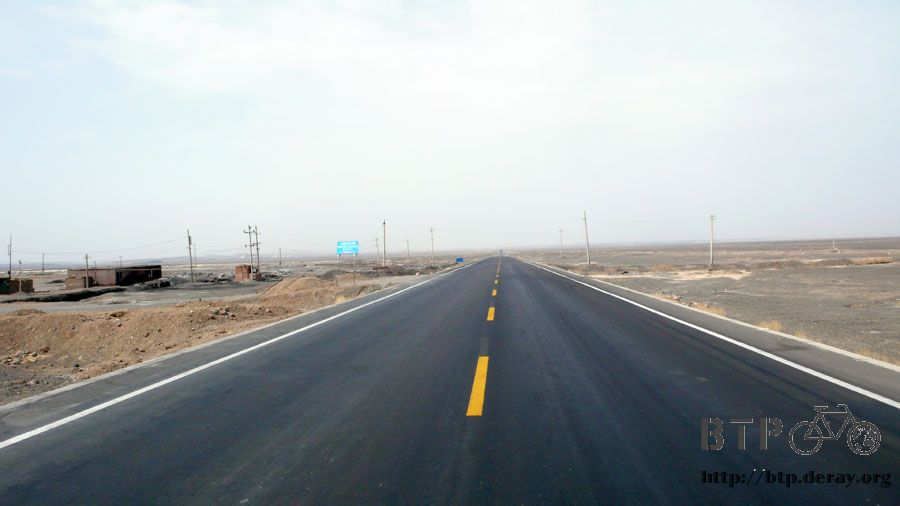
今天不再是無風的天氣了，風勢有大有小，和以往所不同的是，風吹起來不再清涼宜人。
和天空的烈日一樣，風也變的滾燙，一波一波的風吹著，簡直像處在烤爐中的火雞，慢慢被烤熟。
騎了一個多小時，爬上高處之後，接下來往鄯善的路上就好走多了，幾乎全是下坡路，可以有效率的騎車，早一點到目的地休息。
不知道是不是因為海拔降低的緣故，氣溫不斷的節節高升，從一大清早的32度，一直上升到35度、37度、39度，然後突破40度。
我想這大概已經是溫度的極限了吧，之前才37度的時候我就已經熱的苦哈哈，現在都40度了，還能在毫無遮蔽物的烈日下騎車已經算是奇蹟。
但是老天爺可不這麼想，溫度突破40度之後，一點也沒有停下來的意思，41度、42度、43度、44度，繼續向上攀升。
多虧這一長串的下坡路，讓我可以在正午時分回到有人煙的地方，眼光所尋找的目標不是餐廳，因為我完全沒有胃口吃東西。
我需要的是加油站，加油站有大片的陰涼可以讓我休息，免費補充飲水，有些還有商店可以買飲料喝，加上員工大多很友善和很好笑。
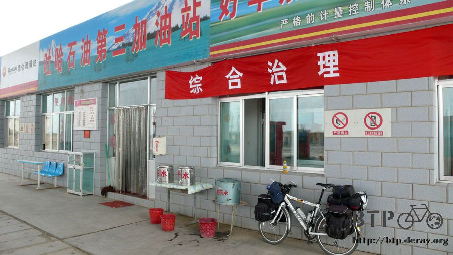
在被太陽烤焦之前，順利的躲進加油站的庇護之下，屋頂下的陰影涼快的像是冷氣房。
在這邊買了一瓶冰果汁，不超過十秒就喝完了，有消費之後躲在這邊休息多久都比較不會不好意思。
我坐在門口的藍色小椅子，想等太陽小一點點的時候再繼續騎，反正剩下不到五十公里的路，慢慢騎的話也只需要三個小時。
坐著坐著不自覺得就趴著睡著了，睡了一個多小時，流了滿桌子的口水。
迷糊中聽到有人在談論小多的聲音而醒過來，是四個年紀加起來超過三百歲的阿公好朋友開車在旅行，中午就在這邊吃泡麵休息。
真是奇怪，明明附近都是一堆餐廳，幹嘛要吃泡麵？
原來是水土不服，東西吃不習慣，這樣真是可惜，旅行又不能吃當地的食物，未免顯得白走這一遭。
剛剛熱心招呼我的加油站員工，在我陷入昏睡之後，也跟我用一樣的姿勢昏睡在加油站裡，他們真是很有趣的人。
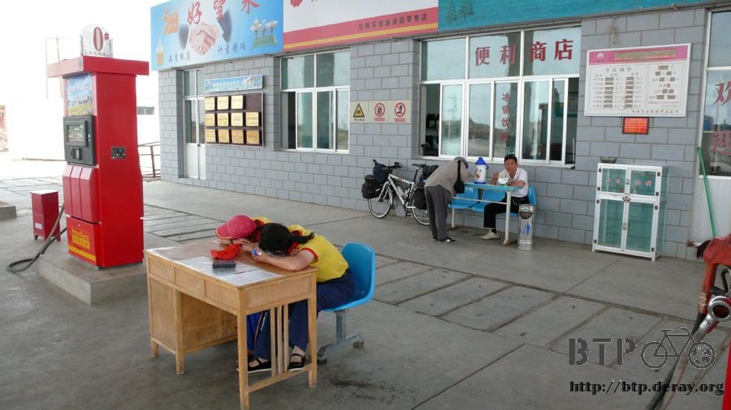
在這邊休息到下午兩點，太陽一點都沒有變小的意思，溫度也絲毫沒有變涼快。
將衣服沒有包覆到的部分，手指頭、臉、脖子都塗上厚厚的防曬油，在加油站員工帶著同情的眼光中往太陽前進。
他們同情的眼光是有道理的，在加油站的陰影下，以及大太陽的陽光下，這是截然不同的兩個世界。
離開陰影，一進入陽光的勢力範圍的瞬間，就開始發燙！
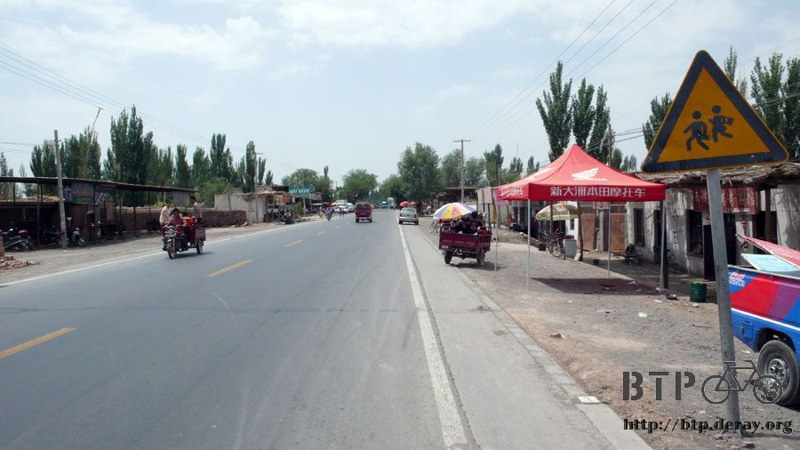
衣服包覆的部分也感受到那充滿惡意的陽光照射而下的威力，黑色的長褲和黑色的手套感受尤其明顯，真的很燙很想大叫救命。
迎著熱風低頭騎車，經過七克台的時候距離鄯善還有三十公里，很想在這裡繼續躲個一小時休息一下。
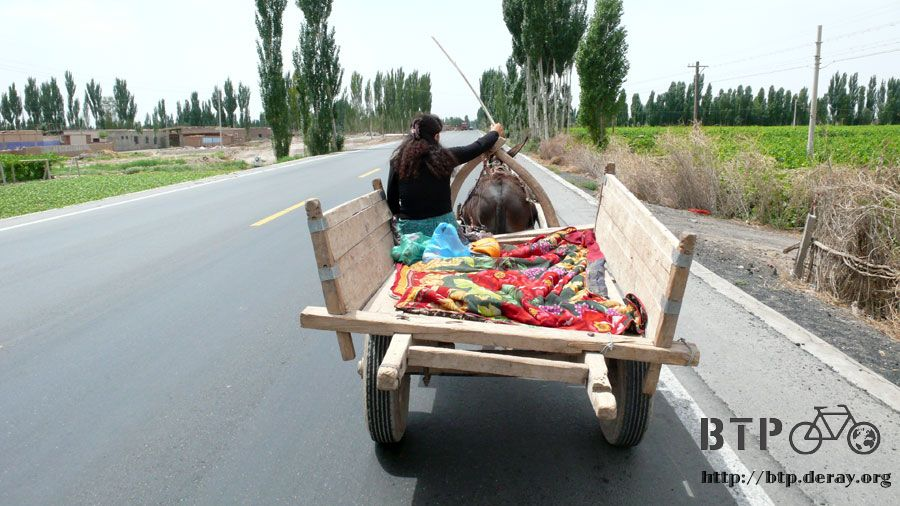
停車喘口氣看一下手錶的溫度計，今天是六月五日星期二，目前是下午四點十五分，此刻的溫度高達四十五‧六度！！！
後面那個包的像是銀行搶匪或是隱形人、縱火犯、變態跟蹤狂等你覺得像什麼都行的那個人，就是在烈日中苦命騎車的我。
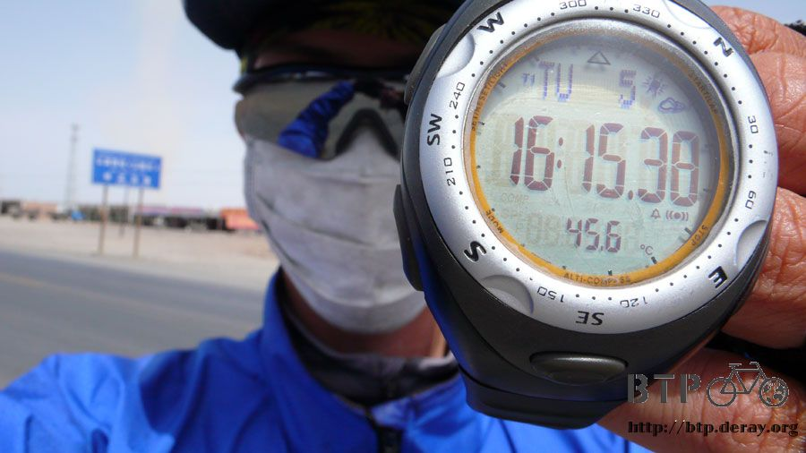
現在的溫度要是出現在台灣，想必是連續好幾天的頭條新聞，什麼『百年來的超高溫！』、『熱浪襲擊台灣』這樣的標題肯定報不完。
目前離庫木塔格沙漠不算太遠，會這麼熱也是可以想見的，但也未免太熱了一點吧，現在才六月初耶。
『同情我，就給我冰棒！』
跟著維族的少年一起挖掘冰箱中便宜又好吃的五角冰棒，一口氣買四支沿路慢慢吃。
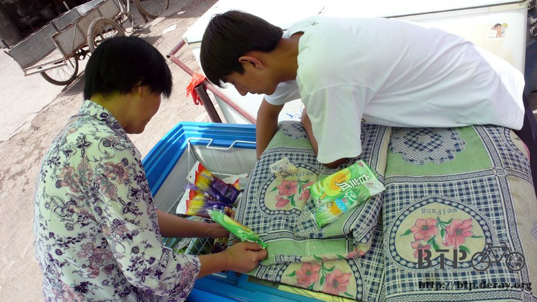
在挑冰棒的時候，老闆娘說了一句今天我覺得形容天氣熱最適當的一句話『熱到真是站哪都熱！』
從拆開冰棒套子的那一刻開始，冰棒就迅速的融化，好加在我吃得很快，三分鐘就吃光了四支冰棒。
鄯善的郊區有產石油和天然氣，像這樣的鑿油機器很多，隨便都可以看的到。
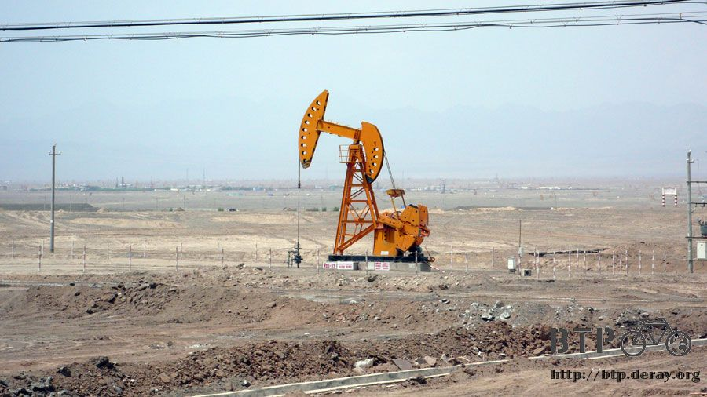
蓋在熱死人的沙漠的正中央一棟平凡無奇的房子，電線桿的電線居然直接就牽到家裡面去，有點好笑的誇張。
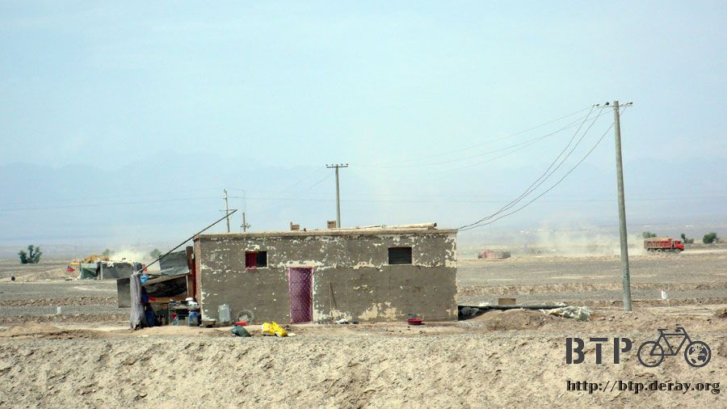
這兩個少年是半路上一路陪我騎到七克台的，可能是熱習慣了，居然能一派輕鬆的騎車，令人敬佩。
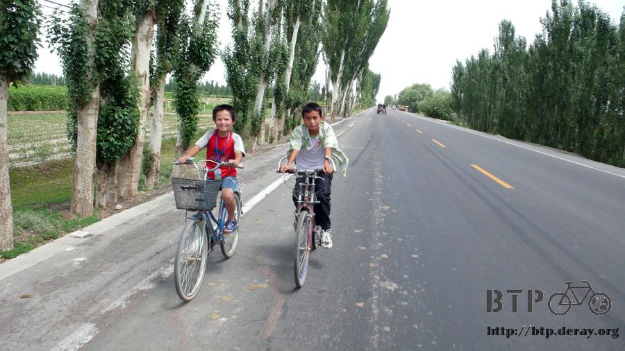
終於在快要變成活人木乃伊之前，我到了今天的目的地了。
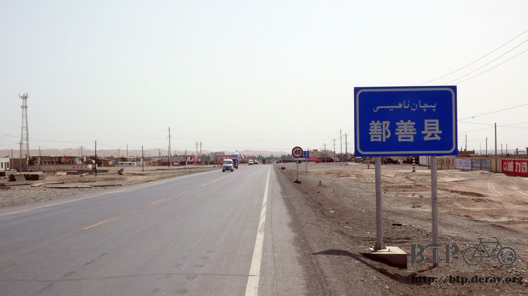
在還沒進入鄯善市區之前，我就先找到了住宿的地方，是一間『涉外賓館』，也就是住外國人比較多的地方。
會選這一間是因為它的招牌很好笑，服務項目的最後一排字是『哈密瓜及車輛服務』，什麼叫做哈密瓜服務呢？
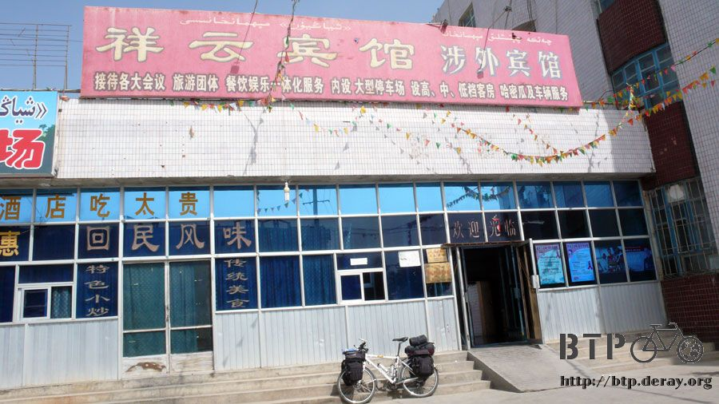
不知道為什麼住宿費很便宜，涉外賓館理論上都是比較貴一點，老闆開價單人間二十元的時候，連員工都說那不是三人間一張床的價錢嗎？
要填寫住宿登記，是旅行以來最難寫的一次表格，有二十幾個欄位，根本就是在寫入境登記表。
還有中外文名字，國籍、簽證號碼及有效日期等欄位，有點想拿出護照誠實的寫，實在太多欄位不知道該怎麼瞎掰。
但是一拿出護照，想必一晚上二十元的房間就要漲價了，我跟員工說能不能拿一張其他人寫好的範本讓我觀摩一下該怎麼寫。
『行，我看一下，有日本人、巴基斯坦人、俄羅斯人、新加坡人，你想看哪一個當範本？』
『沒有中國人的嗎？怎麼住的都是外國人呀？』
好不容易終於寫完一整張的表格，可以牽車進房準備盥洗了。
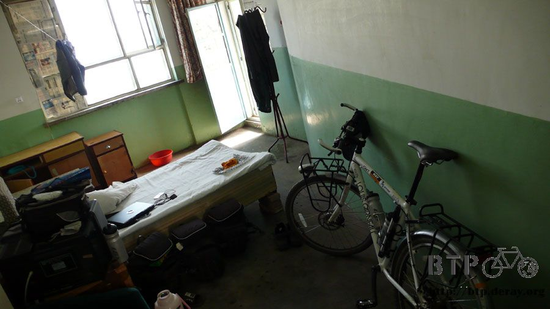
站在蓮蓬頭下面沖著冷水澡，被烈日晒乾的靈魂又得到些許的滋潤，慢慢還原成本來的形狀。
第一次洗澡有像是植物被澆水時那樣的暢快感，冷水從身上流過，一點一點的帶走暑氣和熱意。
由於天氣實在太熱了，明天繼續騎車到吐魯番有點可憐，吐魯番是中國地勢最低的地方，海拔負一百五十公尺，也是全中國溫度最高的保持者。
我不想在那麼熱的地方休息一天，根本就是跟自己過不去，難熬的地方要多待一天？
所以洗完衣服下去樓下櫃檯付住宿費的時候，就繳了兩天的錢，在這裡休息一天，明天還可以去庫木塔格沙漠玩。
住的地方雖然還不到市區，但是周遭很熱鬧，小吃街林立，等太陽下山涼快一點，我的胃口也回來之後，再來大吃一頓吧。
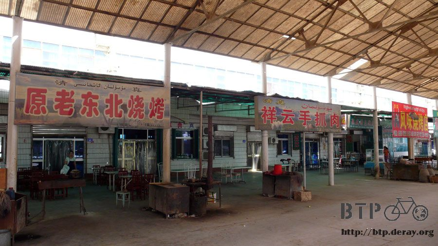
旅館隔壁的這一間餐館，很好笑的餐廳標語，『回家做太累、酒店吃太貴』，好像有其他B2P的夥伴有拍同樣的照片。
我從雜貨店買兩包餅乾回來之後，就問員工說這兩天有沒有跟我一樣騎自行車的外國人來住宿？
結果居然是沒有，真是奇怪，難道他們只是路過這邊拍張照嗎@@"
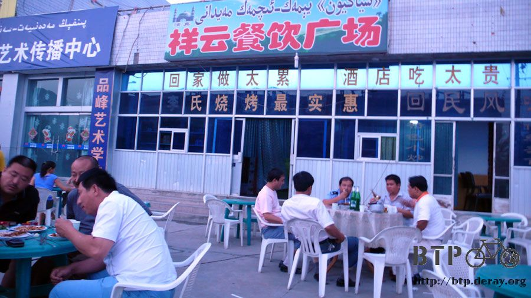
網站不知道為什麼速度變的超級慢，花了我兩個小時，四塊錢的網吧費用，結果連一天的遊記都上傳不上去，瀏覽網頁速度也慢的誇張。
Bluehost，我知道你不在乎我在網站上批評你們有多爛，但是你們真的是遜到一個無以復加的地步，寫信去反應又跟我說現在是下班時間。
之前先是無預警的將網站給關閉，然後彌補的方式就是將每個月的可用頻寬流量提高做為補償，結果現在又搞一個龜速網路服務出來，
這次又要怎麼賠償我的損失？又要再提高無意義的頻寬流量給我了嗎？
拜託來點會的吧，連最基本的網路服務都做不好，有什麼資格吃這行飯。
晚餐吃了小吃街的燒烤，這邊的燒烤跟在哈密吃得很不一樣，哈密都是羊肉串、羊心串等各式羊肉串燒。
這邊居然是烤雞腳、烤雞翅、烤雞腿，突然沒有羊可以吃了，還真有點不習慣。
點了一份小白菜拌麵和一根烤雞腿，結果烤雞腿的價錢比拌麵還便宜很多。
回旅館的時候已經晚上十點半，氣溫依然居高不下，維持在三十三度，比起白天則算是涼快很多。
旅館的人說今天是今年以來最熱的一天，但到了七、八月份之後還會更熱，好加在我不會在這邊待到七、八月份，那時候我已經在俄羅斯涼快了。
繼續閱讀：6.6 光之少女
6.5 |
總計：55.5元 |
早餐蛋炒飯5元、冰棒四支2元、雜貨店家庭號薯片2.5元、沙琪瑪3.5元、果汁3.5元、可樂3元、住店20元、晚餐小白菜拌麵7元、好吃烤雞腿5元、網吧兩小時4元 |
|
中國-人民幣－ 1：4.3 台幣